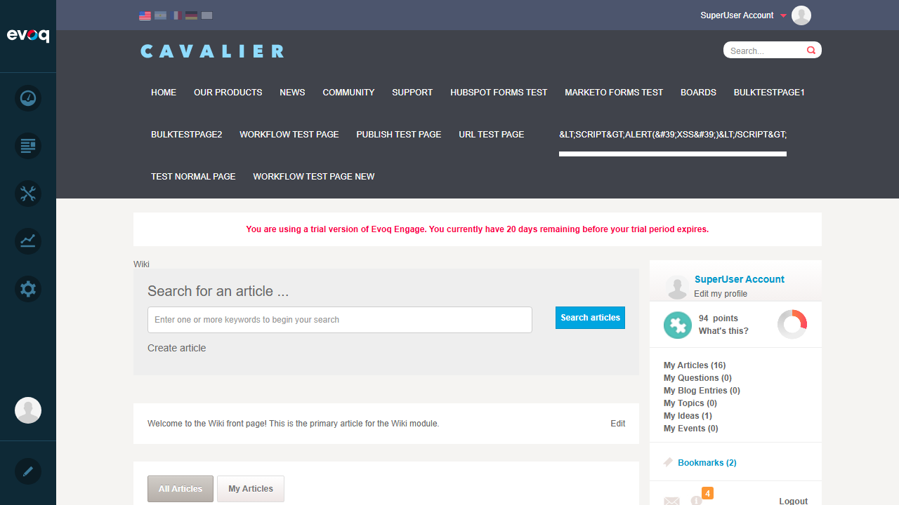
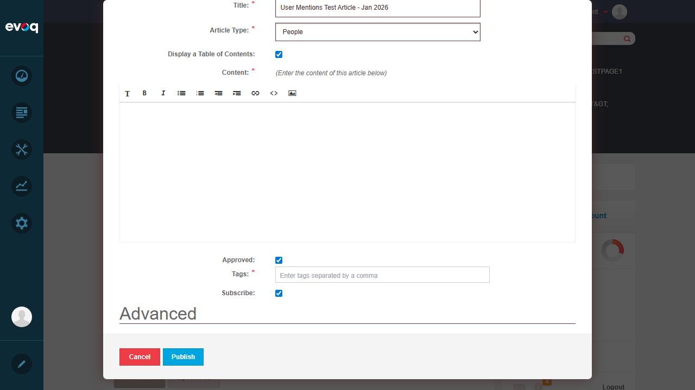
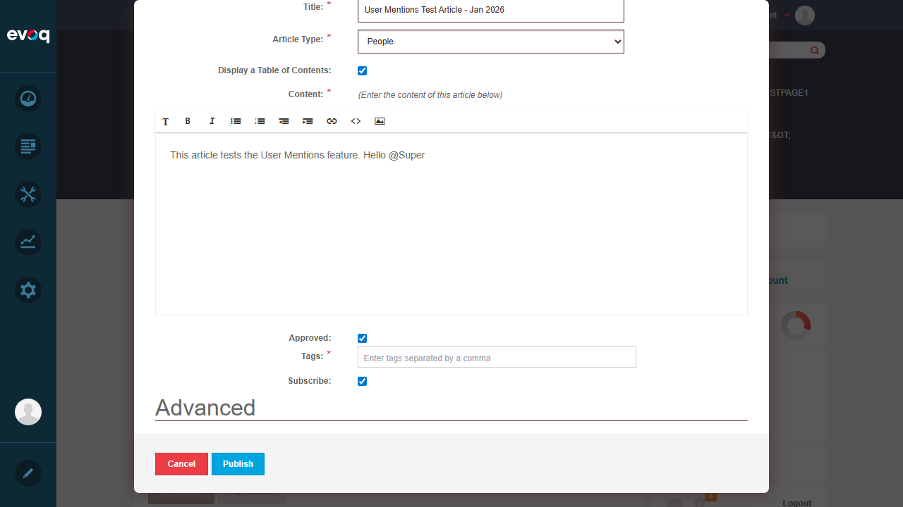
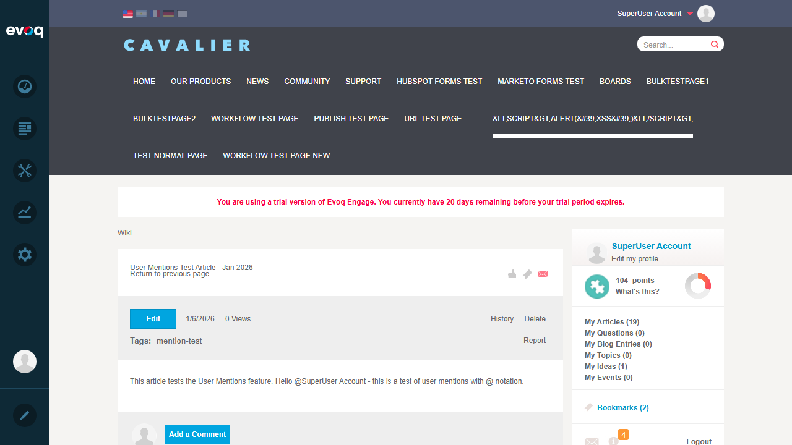
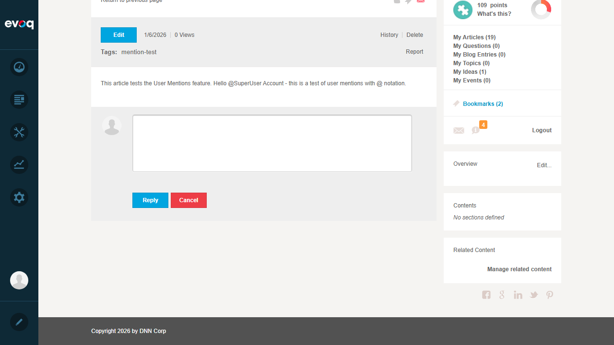
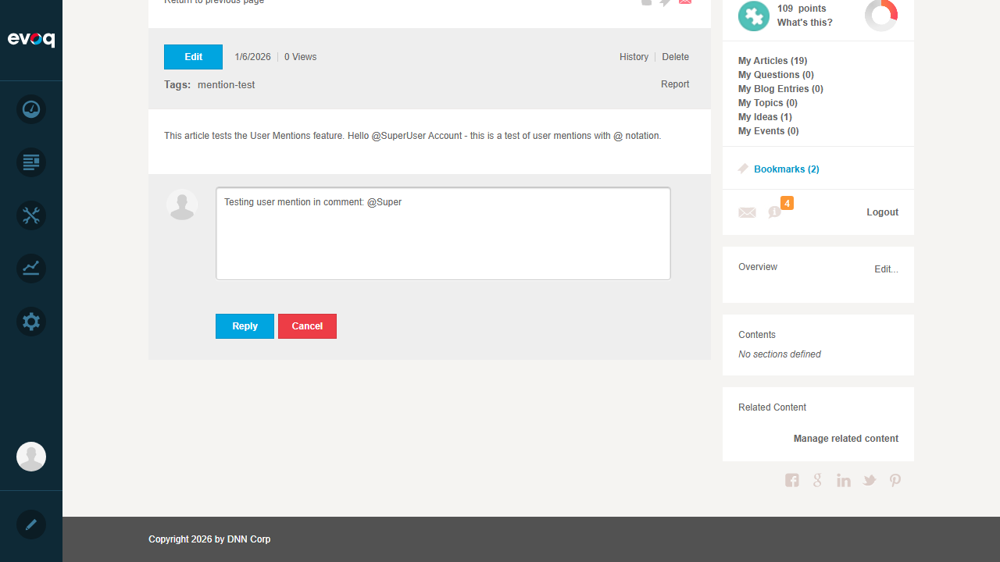
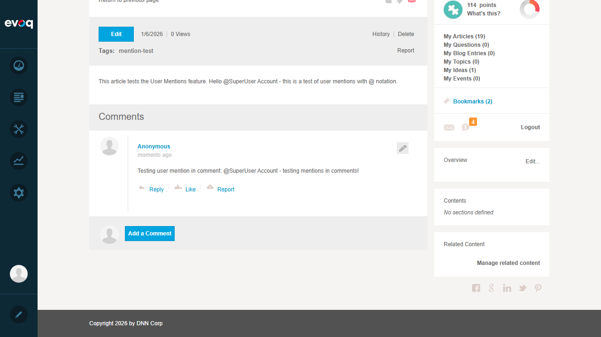
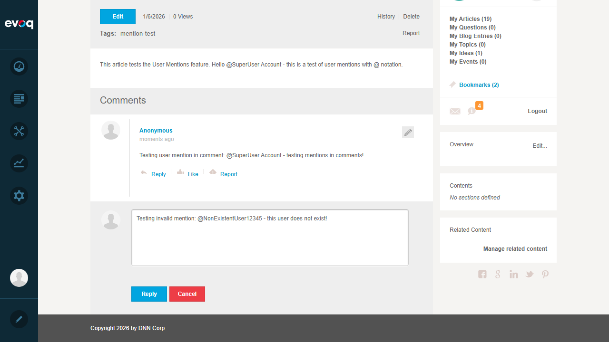
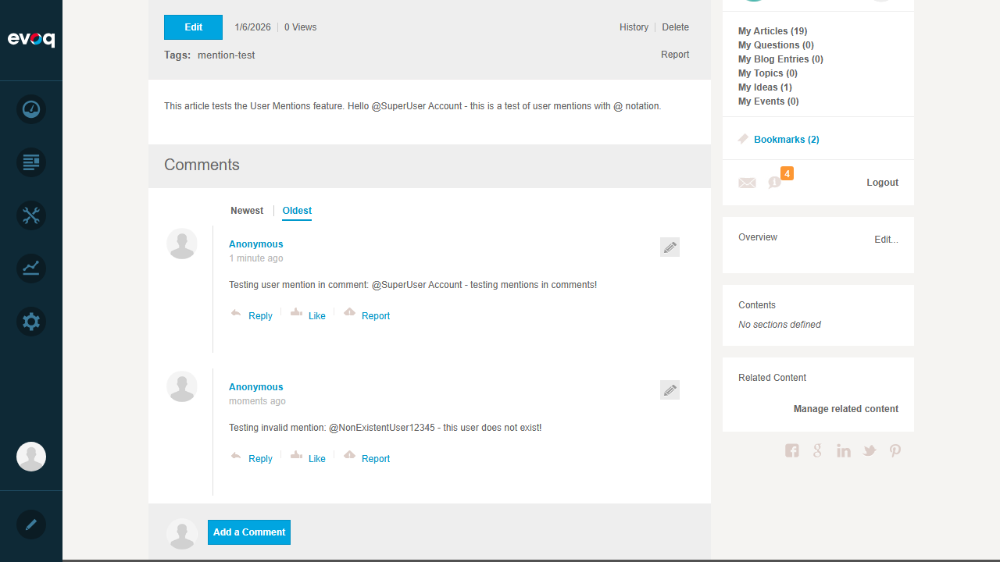

Test 1: Mention User in Article
PASS
Description
Test the ability to mention a user using @ notation in a Wiki article.
Steps Taken
- Navigated to Wiki module at /en-us/Community/Wiki
- Clicked "Create Article" button to open new article dialog
- Entered article title: "User Mentions Test Article - Jan 2026"
- In the article content editor, typed: "This article tests the User Mentions feature. Hello @SuperUser Account - this is a test of user mentions with @ notation."
- Added tag "mention-test"
- Clicked "Publish" button
- Article was successfully created and published
Evidence

Step 1: Wiki module main page with Create Article button

Step 2: Create Article dialog opened

Step 3: Typing @ mention in content editor

Step 4: Full mention "@SuperUser Account" typed
Step 5: Article with tag added, ready to publish

Step 6: Article successfully published showing @SuperUser Account mention
Result
The @ mention was successfully created in the article content. The mention text "@SuperUser Account" appears in the published article. The feature works as expected for creating user mentions in articles.
Test 2: Mention Auto-Complete
FAIL
Description
Test that typing @ triggers an auto-complete dropdown showing matching users.
Steps Taken
- In the article content editor, typed "@" character
- Continued typing "Super" to trigger autocomplete
- Observed the editor for autocomplete dropdown
Evidence
Typing @ character - no autocomplete dropdown visible
Issue Found
The autocomplete dropdown did not appear visibly when typing "@" followed by letters. The @ mention still works by typing the full username, but the expected autocomplete suggestion list was not displayed. This may be due to:
- Autocomplete requires specific UI interaction timing
- The Redactor editor's mention plugin may not be fully configured
- The autocomplete may only trigger after a specific delay or character count
Result
No autocomplete dropdown was observed during testing. Users can still manually type complete usernames with @ prefix, but the expected autocomplete assistance is not functioning as expected.
Test 3: Mention User in Comment
PASS
Description
Test the ability to mention a user using @ notation in a Wiki article comment.
Steps Taken
- Navigated to the published article "User Mentions Test Article - Jan 2026"
- Clicked on the "Add a Comment" area
- Typed comment text with @ mention: "Testing user mention in comment: @SuperUser Account - testing mentions in comments!"
- Clicked "Reply" button to submit the comment
- Comment was successfully posted
Evidence

Step 1: Comment form visible below article

Step 2: Comment text with @SuperUser Account mention typed

Step 3: Comment successfully posted with @ mention visible
Result
The @ mention was successfully created in the comment. The mention text "@SuperUser Account" appears in the posted comment. Comments support user mentions as expected.
Test 4: Invalid User Mentions Handling
PASS
Description
Test how the system handles mentions of non-existent users.
Steps Taken
- On the article page, clicked "Add a Comment"
- Typed comment text with invalid mention: "Testing invalid mention: @NonExistentUser12345 - this user does not exist!"
- Clicked "Reply" button to submit the comment
- Observed system behavior
Evidence

Step 1: Invalid mention "@NonExistentUser12345" typed in comment

Step 2: Comment with invalid mention successfully posted
Result
The system gracefully handles invalid/non-existent user mentions:
- The comment was accepted without errors
- The mention text "@NonExistentUser12345" is displayed as plain text
- No notification would be sent (user doesn't exist)
- No validation error or warning is shown to the user
This is expected behavior - the system treats non-existent mentions as plain text without blocking the content submission.